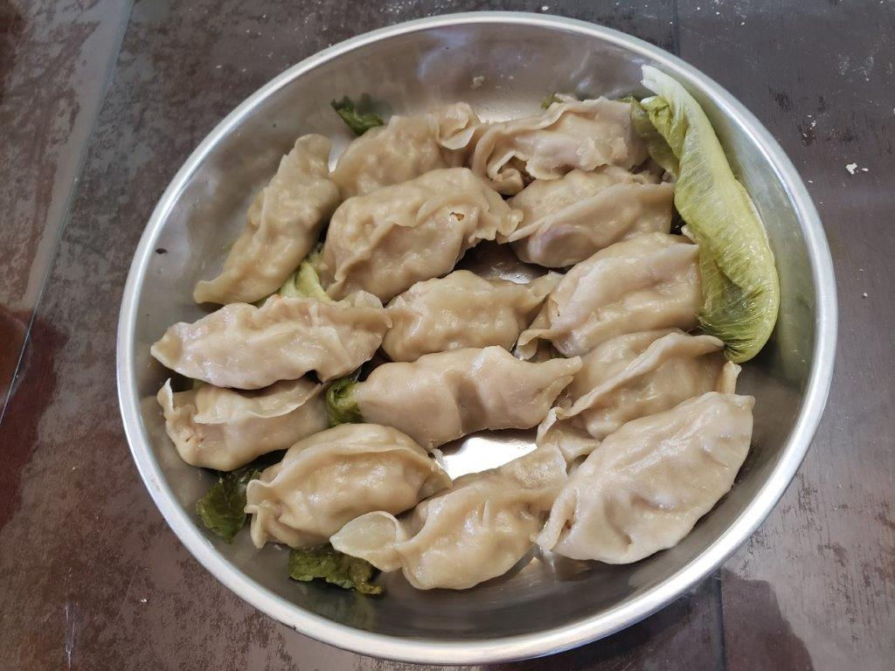

Steamed Dumpling Wrappers

Ingredients:
- 3 cups Flour (420 g)
- 1 cup Boiling water
- 1/4 cup Room temperature water
- 1 tsp Canola oil
Instructions:
- In a large mixing bowl, add the flour. Pour the boiling water into the middle of the flour while stirring constantly and leaving the outer edge of flour untouched. Then pour the room temperature flour onto the outer edge of flour and mix. When the water is fully absorbed start to knead the dough. When a dough has started to form, flour hands and work surface and knead the dough for about 10-15 minutes or until smooth.
- Coat the inside of a bowl with oil. Place the dough in the bowl and cover with pastic wrap. let rest for 30 minutes to an hour.
- Divide the dough into four segments. Work on one at a time and keep the rest covered in the plastic wrap to prevent drying out.
- Roll the dough into a log and divide it into 10 even pieces. Keep the pieces not being worked on under a moist towel. Roll each piece into a flat disc, about 4 inches. If possible, fill the wrappers with filling immediately as they are made and wrap with preferred method. Repeat to make 40 wrappers.